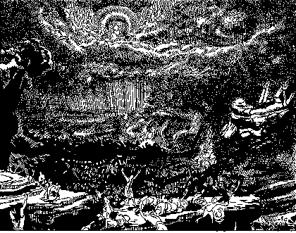

|
A "Secret Rapture" in the Judgment Hour?
by Samuele Bacchiocchi
Many sincere Christians believe that Christ's Second Coming will occur in two distinct phases. The first phase is known as the "secret rapture" of the Church and can happen at any moment. At this time Christ comes down only part-way to the earth to resurrect the sleeping saints and to transform and glorify living believers. Both groups are then raptured, that is, snatched away secretly, suddenly, and invisibly, to meet the descending Lord in the air. This body of believers, called the "Church," will then go up to heaven to celebrate with Christ for seven years the marriage feast of the Lamb, while Jews and unconverted Gentiles will stay on this earth to suffer the final seven years tribulation.
At the end of this seven-year period, the second phase of Christ's Coming, generally called the Return or the Revelation, will occur. Christ then comes in glory with the saints all the way down to the earth to destroy His enemies in the Battle or Armageddon, to set up His throne in Jerusalem and to begin His millennial terrestrial reign.
How soon is the mass disappearance of millions of true Christians from every nation supposed to occur? Many believe that this event is imminent because its main precondition, namely the reestablishment of the State of Israel and the repossession of ancient Jerusalem, have already taken place. This belief is expressed on bumper stickers like the one that warns: "If the driver disappears, grab the wheel."
According to Hal Lindsey's initial calculations this secret rapture of the church, or as he prefers to call it, "the great snatch,"1 is already overdue. In 1970 he predicted that "within forty years or so of 1948 [the year of the formation of the modern State of Israel] all these things could take place."2 Lindsey derives the "forty years" from the Biblical duration of a generation and argues on the basis of the parable of the Fig Tree (Matt 24:32-33) that the formation of the State of Israel in 1948 marks the beginning of the last "generation" (Matt 24:34) that will see first the rapture, then the seven years of tribulation, and finally the Return of Christ in glory. Since the rapture, according to Lindsey and the majority of Dispensationalists, takes place seven years (Dan 9:27) before Christ's visible Return in glory, it should already have occurred by 1981 or 1982. What this means is that time has already run out on such sensational but senseless predictions.
The Rise, Expansion, and Decline of Pre-tribulationism
The Origin of Pre-tribulationism— The belief that the church will be raptured suddenly and secretly before the final, great tribulation, is known as pre-tribulationism. Its origin is generally traced back to the 1830s. John N. Darby, an Anglican preacher who became the founder of the Plymouth Brethren, is regarded as the most influential expositor and promulgator of the pre-tribulation rapture. Through his six visits to America and the extensive literature campaign of the Brethren, pre-tribulationism spread rapidly.
The Expansion of Pre-tribulationism— The period of the maximum expansion and predominance of pre-tribulationism was the first half of the twentieth century. Men like Arno C. Gaebelein, C. I. Scofield, James M. Gray at the Moody Bible Institute, Reuben A. Torrey at the Bible Institute of Los Angeles, Harry A. Ironside at the Moody Memorial Church, and Lewis Sperry Chafer at the Evangelical Theological College (now Dallas Theological Seminary) have played a major role in popularizing the pre-tribulational rapture.3 The single most important factor was the wide circulation of the Scofield Reference Bible, published in 1909 and revised in 1917, which inculcated this teaching among the masses as the only correct Biblical view.
Resurgence of Post-tribulationism— Since 1950 more and more evangelical scholars have been abandoning pre-tribulationism and returning to historic post-tribulationism. The latter holds that the church will go through the great tribulation, at the end of which Christ will come to resurrect the sleeping saints and save the living believers. Credit for the resurgence of post-tribulationism must be given first of all to the influence of George E. Ladd, New Testament Professor at Fuller Theological Seminary. Some of his important books on this subject are Crucial Questions About the Kingdom of God (1952), The Blessed Hope (1956) and The Last Things (1978). His respected scholarship coupled with his commitment to evangelicalism have caused many evangelical scholars to rethink their pre-tribulational views.
The influence of Ladd can be seen in the following significant studies produced by scholars who have embraced post-tribulationism and have written in its defense: The Greatness of the Kingdom (1959) by Alva J. McClain, president of Grace Theological Seminary at Winona Lake, Indiana; The Imminent Appearing of Christ (1962) by J. Barton Payne, Old Testament Professor at Trinity Evangelical College; and The Church and the Tribulation (1973) by Robert H. Gundry, Professor of Religious Studies at Westmont College, California.4
Studies such as these have influenced numerous scholars within traditionally pre-tribulational institutions to return to historic post-tribulationism. The Evangelical Free Church of America, for example, a past defender of the pre-tribulation Rapture, allowed professors from Trinity Evangelical Divinity School to challenge pre-tribulationism at their annual ministerial conference in January 1981. The challenges and the responses—published in 1984 as a
symposium entitled "The Rapture: Pre-, Mid-, or Post-Tribulational" — offers a most scholarly debate on the issues related to the Rapture.
A Mistaken Assumption— Even a cursory reading of pre-tribulation literature suffices to make a person aware of the fact that the belief in the secret rapture rests much more on subjective assumptions than on Biblical teaching. The leading assumption is that God has a different plan for the Church than for Israel. Consequently, it is assumed that the Church must be removed from the earth before God can begin dealing with the Jews by causing them to be converted on a large scale through the experience of the great tribulation.
John F. Walvoord, a leading champion of the secret rapture, explicitly acknowledges the importance of this assumption when he writes: "The rapture question is determined more by ecclesiology than by eschatology," that is to say, more by one's understanding of the relation between the Church and Israel than by Biblical teachings regarding the End.5
C. C. Ryrie, another leading pre-tribulationist, expresses the same conviction, saying: "The distinction between Israel and the Church leads to the belief that the Church will be taken from the earth before the beginning of the tribulation (which in one major sense concerns Israel)."6
Hal Lindsey goes so far as to make the distinction between Israel and the Church his "chief reason" for believing that "the Rapture occurs before the Tribulation."7 He argues that "if the Rapture took place at the same time as the second coming, there would be no mortals left who would be believers; therefore, there would be no one to go into the kingdom and repopulate the earth."8 In other words, since Lindsey assumes that the messianic Kingdom predicted by Old Testament prophets will be established by Christ at His Second Advent as an earthly kingdom consisting predominantly of mortal, believing Jews, then of necessity the rapture of the Church must take place before. How can Christ come to establish a millennial Jewish Kingdom on this earth, if all the believers are raptured away from this earth at His Coming?
Second Advent Split into Two Phases— To solve this dilemma, Dispensationalists split the Second Advent into two phases: first an invisible Coming to secretly rapture the Church, and second a visible Coming seven years later to destroy the wicked and to establish the millennial Jewish Kingdom. The reasoning behind this construct may sound right, but it is wrong because it rests on the mistaken assumption that there is a radical distinction between God's plan for Israel and that for the Church.
There is no Biblical support for a radical distinction between Israel and the Church. The future of Israel is seen in the New Testament, not as a separate millennial political kingdom in Palestine, but as everlasting blessedness shared together with the redeemed of all the ages in a restored new earth. Unfortunately, it is this wrong assumption that determines the interpretation of Biblical texts adduced in support of the rapture. It is argued, for example, that a certain text cannot refer to the Church because it describes the great tribulation, which is supposed to be only for Israel. This kind of circular reasoning, based on a gratuitous assumption, is not the correct method of interpreting Bible texts. Conclusions must be drawn from careful exegesis, not from preconceived assumptions.
Four Reasons for Rejecting the Secret Rapture
A careful study of the Biblical texts relevant to the Return of Christ suggests at least four major reasons for rejecting the view of a two-stage Second Coming of Christ.
The Vocabulary of the Second Advent— The first reason for rejecting a pre-tribulation secret rapture is the fact that the vocabulary of the Second Advent offers no support for such a view. None of the three Greek terms used in the New Testament to describe the Return of Christ, namely— parousia "coming", apokalypsis "revelation", and epiphaneia "appearing"— suggest pre-tribulational secret rapture as the object of the Christian Advent Hope.
Pre-tribulationists claim that the word parousia "coming" is used by Paul in 1 Thessalonians 4:15 to describe the secret rapture. But in 1 Thessalonians 3:13 Paul uses the same word to describe "the coming of our Lord Jesus with all his saints"— a description, according to pre-tribulationists, of the second phase of Christ's Return.
Again in 2 Thessalonians 2:8, Paul employs the term parousia, "coming", to refer to the Coming of Christ which will cause the destruction of the antichrist, an event which, according to pre-tribulationists, is supposed to happen at the second phase of Christ's Coming.
Similarly the words apokalypsis, "revelation", and epiphaneia, "appearing", are used to describe both what pre-tribulationists call the rapture (1 Cor 1:7; 1 Tim 6:14) and what they call the Return or second phase of Christ's Coming (2 Thess 1:7-8, 2:8). Thus the vocabulary of the Blessed Hope provides no basis whatever for a two-phase distinction of Christ's Return, since its terms are used interchangeably to describe the same single event. More important still is the fact that each of the three terms is clearly used to describe the post-tribulational Return of Christ which is viewed as the object of the believer's hope.
The parousia, for example, is indisputably post-tribulational in Matthew 24:27, 38, 39 and in 2 Thessalonians 2:8. The same is true of the apokalypsis "revelation" in 2 Thessalonians 1:7 and of epiphaneia " appearing" in 2 Thessalonians 2:8. Therefore, the vocabulary of the Blessed Hope excludes the possibility of a secret Coming of Christ to rapture the Church, followed after seven years of tribulation by a visible, glorious Coming to establish the millennial Jewish Kingdom. The terms used clearly point to a single, indivisible, post-tribulational Advent of Christ to bring salvation to believers and retribution to unbelievers.
No Secret Rapture of the Church— A second reason for rejecting a pre-tribulational secret rapture of the Church is the fact that there is no trace in the New Testament of a secret, invisible, instantaneous rapture of the Church. The most notorious description of the Second Advent, which is found in 1 Thessalonians 4:15-17, suggests the very opposite when it speaks of the Lord descending "from heaven with a cry of command, with the archangel's call, and with the sound of the trumpet of God." "The dead in Christ will rise" and together with the living saints they will be "caught up" (raptured) to meet the Lord in the air.
The "cry," the "call," "the trumpet," and the great gathering of living and resurrected saints hardly suggest a secret, invisible and instantaneous event. On the contrary, as has often been pointed out, this is perhaps the noisiest passage in the Bible. The reference to "a loud trumpet call" and the "the trumpet [which] will sound" in the parallel passages of Matthew 24:31 and 1 Corinthians 15:52 corroborates the visibility and public nature of the Second Advent. No trace of a secret rapture can be found in any of these passages.
No Removal of the Church from the Great Tribulation— A third reason for rejecting the notion of a pre-tribulational secret rapture of the Church is the fact that such a notion is not supported by the tribulation passages. For example, in His Olivet discourse Jesus speaks of the "great tribulation" that will immediately precede His coming and He promises that "for the sake of the elect those days will be shortened" (Matt 24:21-22, 29). To argue that "the elect" are only Jewish believers and not members of the Church means to ignore that Christ was addressing His apostles who represent not only national Israel but the Church at large. This is confirmed by the fact that both Mark and Luke report the same discourse for the Gentile church (Mark 13; Luke 21).
Noteworthy also is the striking similarity between Christ's description of the rapture of the Church in Matthew 24:30-31 and that of Paul in 1 Thessalonians 4:16-17. Both passages mention the descent of the Lord, the sounding of the trumpet, the accompanying angels and the gathering of God's people. Such similarities suggest that both passages describe the same event. Yet in Matthew the rapture of the Church is explicitly placed "after the tribulation" (Matt 24:29) at the time of Christ's Coming "with power and great glory" (vv. 29-30). The parallelism between the two passages clearly indicates that the rapture of the Church does not precede but, on the contrary, follows the great tribulation.
Christ never promised His Church a pre-tribulation rapture out of this world. Rather He promised protection in the midst of tribulation. In His petition to His Father He said: "I do not pray that thou shouldst take them out of the world, but that thou shouldst keep them from the evil one" (John 17:15). Similarly to the Church in Philadelphia, Christ promises: "I will keep you from the hour of trial which is coming on the whole world, to try those who dwell upon the earth" (Rev 3:10). If the Church was absent from this earth during the hour of testing, there would be no necessity of divine protection.
No Pre-tribulation Rapture in Scripture— Lastly, the notion of a secret pre-tribulational rapture is negated by Paul and the book of Revelation. In his admonitions to the Thessalonians Paul explains that believers will be granted "rest" from the tribulation of this present age "when the Lord Jesus is revealed from heaven with his mighty angels in flaming fire, inflicting vengeance upon those who do not know God . . ." (2 Thess 1:7-8). In other words, believers will experience deliverance from the sufferings of this age, not through a pre-tribulational secret rapture but at the post-tribulational revelation of Christ.
In the second chapter Paul refutes the misconception prevailing among the Thessalonians that the day of the Lord had come. To refute this misconception he cites two major events that must occur before the Coming of the Lord, namely, the rebellion and the appearance of "the man of lawlessness" (2 Thess 2:3) who will persecute God's people.
What is crucial in this passage is that Paul makes no mention of a secret pre-tribulational rapture as a necessary antecedent of the Coming of the Lord. Yet, this would have been the strongest argument Paul could have used to prove to the Thessalonians that the day of the Lord could not possibly have come, since their rapture out of this world had not yet taken place. Paul's omission of this vital argument strongly suggests that Paul did not believe in a pre-tribulational rapture of the Church.
This conclusion is also supported by Paul's mention of the appearance of the antichrist—an indisputably tribulational event which believers will see before the Coming of the Lord. If Paul expected the Church to be raptured away from this world before the tribulation caused by the appearance of the antichrist, he could hardly have taught that believers would see such an event before the Coming of the Lord. What interest would the Thessalonians have in the appearance of the antichrist along with the tribulation accompanying him, if they were to be snatched away from this earth before these events took place? Thus by both his omission and his affirmation, Paul negates the view of a pre-tribulational rapture of the Church.
No Pre-tribulational Rapture in Revelation— The book of Revelation treats in fuller detail than any other book of the New Testament the events associated with the great tribulation, such as the sounding of the seven trumpets, the appearance of the beast that inflicts a terrible persecution upon the saints of God, and the pouring out of the seven last plagues (Rev 8 to 16). Though John describes in great detail tribulational events, he never mentions or suggests a pre-tribulational secret Coming of Christ to rapture the Church away. This is all the more surprising in view of John's express purpose to instruct the churches regarding final events.
John explicitly mentions a countless multitude of believers who will pass through the great tribulation: "These are they who have come out of the great tribulation; they have washed their robes and made them white in the blood of the Lamb" (Rev 7:14). Pre-tribulationists argue that these believers are of only the Jewish race, allegedly because the Church in Revelation 4 to 19 is no longer on earth but in heaven. This reasoning is discredited first of all by the fact that nowhere does John differentiate between Jewish and Gentile tribulation saints.
John explicitly states that the victorious tribulation believers come "from every nation, from all tribes and peoples and tongues" (Rev 7:9). This phrase occurs repeatedly in Revelation to designate not exclusively the Jews but inclusively every member of the human family (Rev 5:9; 10:11; 13:7; 14:6). The Lamb, for example, is praised by the 24 Elders for having ransomed men "from every tribe and tongue and people and nation" (Rev 5:9). Obviously, Christ has ransomed not only Jews but people of every race.
Ecstasy of John, not Rapture of the Church— The argument that the Church in Revelation 4 to 19 is in heaven is based on the faulty assumption that the command to John: "Come up hither, and I will show you what must take place after this" (Rev 4:1), is supposed to refer to the rapture of the Church to heaven. This is an unwarranted interpretation, because the text speaks not of the rapture of the Church, but of John's ecstatic visionary experience. Even John F. Walvoord, a leading pre-tribulationist, openly acknowledges that "there is no authority for connecting the rapture with this expression."9
The similarities between the admonitions given in the letters to the seven churches and those given to the tribulation saints suggest that the two are essentially the same people. For example, four times in the seven letters the need for "endurance" is emphasized (Rev 2:2, 3, 19; 3:10), and the same quality is expected of the tribulation saints (Rev 13:10; 14:12). Similarly, the need to "conquer," expressed seven times in the letters to the churches (Rev 2:7, 11, 17, 26; 3:5, 12, 21), is the very attribute of the tribulation saints "who had conquered the beast and its image" (Rev 15:2). It hardly seems conceivable that John intended to ascribe the same characteristics to two different groups of people.
Church Suffers Tribulation but not Divine Wrath— In Revelation 22:16, Jesus claims to have sent His angel to John "with this testimony for the churches." It is difficult to see how the messages given by the angel to John could be a testimony for the churches if the Church is not directly involved in most of the events described in the book (Rev 4 to 19).
The fact of the matter is that the Church in Revelation will suffer persecution by satanic powers during the final tribulation, but she will not suffer divine wrath. The divine wrath, which is portrayed by the seven apocalyptic plagues, is poured out not indiscriminately upon all, but selectively upon those who "bore the mark of the beast and worshiped its image" (Rev 16:2; cf. 14:9-10).
As the ancient Israelites enjoyed God's protection during the ten plagues (Ex 11:7), so God's people will be protected when His divine wrath will fall upon the wicked. This divine protection is represented in Revelation by an angel sealing the servants of God on their foreheads (Rev 7:3) so that they may be spared when God's wrath falls upon the impenitent (Rev 9:4). Ultimately God's people will be rescued by the glorious Return of Christ (Rev 16:15; 19:11-21). Thus Revelation portrays not a pre-tribulational rapture of the Church but a post-tribulational Return of Christ.
Conclusion— In light of the reasons discussed above, we conclude that the popular teaching of a secret Coming of Christ to rapture the Church before the final tribulation is a mistaken End-time sign devoid of any Biblical support. Such a belief makes God guilty of appalling discrimination for giving a preferential treatment to the church that is removed from the earth prior to final tribulation reserved for the Jews. The Scripture teaches that Christ's Second Coming is a single event which occurs after the great tribulation and will be experienced by believers of all ages and all races. This is the Blessed Hope that unites "every nation and tribe and tongue and people" (rev 14:6).
———————————————
End notes:
1. Hal Lindsey, The Rapture: Truth or Consequences (New York, 1983), p. 24.
2. Hal Lindsey, The Late Great Planet Earth (Grand Rapids, 1970), p. 54.
3. For a brief but informative survey of the development of pre-tribulationism, see Richard R. Reiter, "A History of the Development of the Rapture Position," The Rapture. Pre-, Mid-, or Post-Tribulational, symposium (Grand Rapids, 1984), pp. 24-34.
4. See also Norman F. Douty, Has Christ's Return Two Stages? (New York, 1956); Alexander Reese, The Approaching Advent of Christ (Grand Rapids, 1975).
5. John F. Walvoord, The Rapture Question (Grand Rapids, 1957), p. 50.
6. C. C. Ryrie, Dispensationalism Today ( Chicago, Moody Press, 1965), p. 159.
7. Hal Lindsey, The Late Great Planet Earth (Grand Rapids, 1970), p. 143.
8. Ibid.
9. John F. Walvoord, The Revelation of Jesus Christ (Chicago, 1966), p. 103.
|